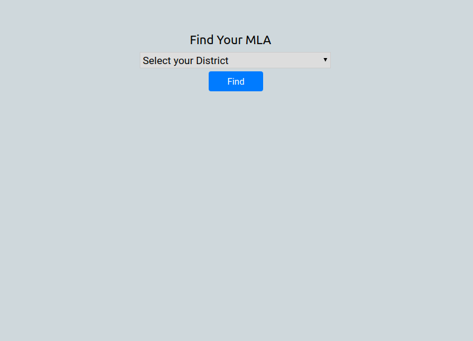

SPAW:
An Unoffical Streamable Python API Wrapper(SPAW).
Streamable has a straight forward API, but there is a lack of up to date API Wrappers for it.
As such I decided to make one for Python, and package it to make it pip-installable.
SPAW has three main functionalties: Upload a Video, Import a Video, and Retrieve a Video.
Documentation | GitHub

Facebook Mirror Bot:
A Reddit bot that posts a Streamable mirror of Facebook videos submissions.
The bot also just so happens to most a picture of a random cat gif.
Main purpose was to practice using different APIs such the Reddit API and
The Streamable API to make my own API Wrapper.
GitHub